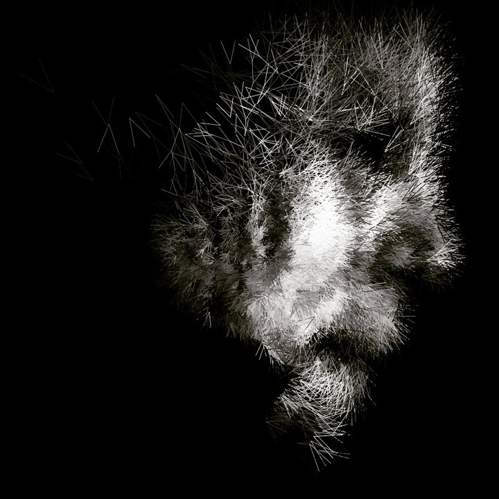
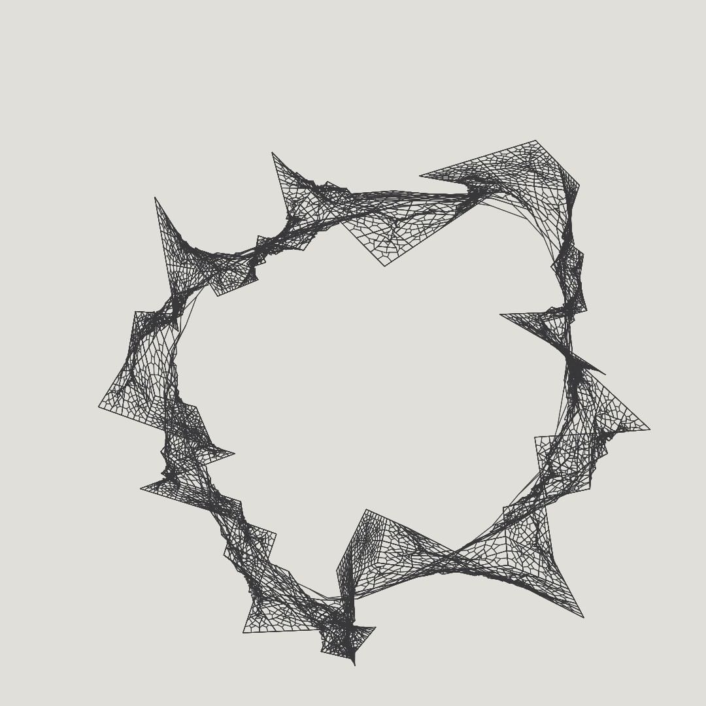
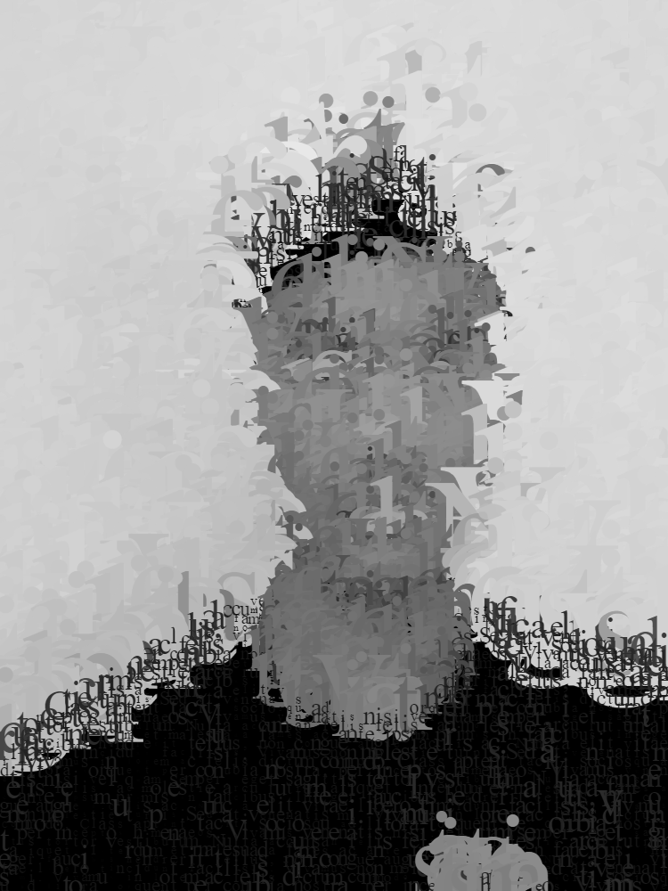
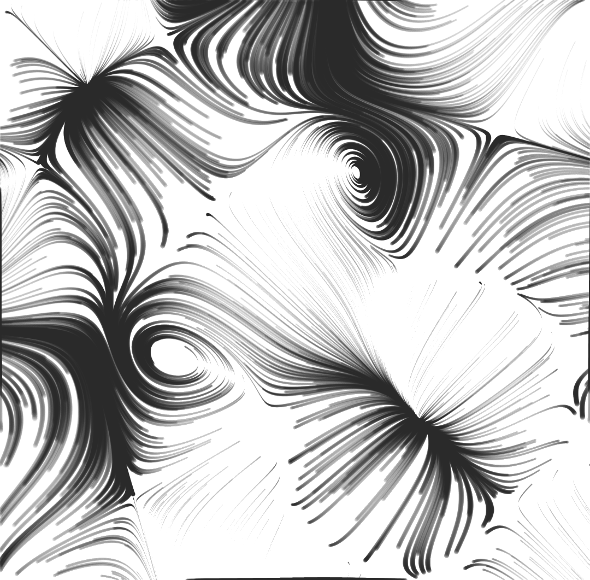
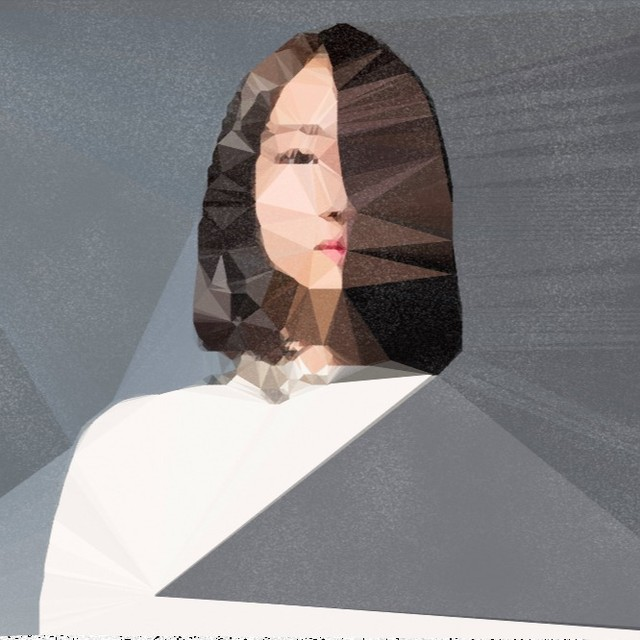

Education
- Pine View School: High School Diploma (2018-2022)
- Georgia Institute of Technology: B.S. Computer Science (2022 - 2025)
Experience
- Software Engineer Intern at MathWorks (May 2023 - August -2023)
- Created a feature-based testing framework to resolve 40+ critical bugs related to visual signal data in Simulink.
- Improved a JavaScript testing framework with cursor dragging functionality and automated 6000 tests for Simulink Scope reliability using JavaScript and MATLAB.
- NLP Researcher at Georgia Institute of Technology (2022-Present)
- Conducted web scraping on Twitter and Nairaland, collecting over 10 million comments.
- Used advanced techniques like BERT-derived models for topic modeling and sentiment analysis to identify influential agents in a controversy surrounding the death of the Nigerian President Buhari.
- Curated misinformation data to fact-checking organizations.
- Software Engineer Intern at New College of Florida (2021-2022)
- C++ and NumPy to implement 5 pitch detection algorithms, including a polyphonic pitch detection algorithm using various signal processing techniques.
- Created a corpus of over 30 annotated vocals from folk ensembles to address the scarcity of annotated data for non-western music in vocal ensemble databases.
- Coding Mentor at Suncoast Science Center (2020-2022)
Publications
- Teach Yourself Georgian Dataset: A Corpus Of Traditional A Cappella Vocal Polyphony
- David Gillman, Uday Goyat, Atalay Kutalay
- ISMIR Conference 2022, paper link
- 8th in the Multimedia subcategory of Engineering and Computer Science
- 1st the Music & Musicology subcategory of Humanities, Literature, and Arts
- MathWorks Math Modeling Challenge
- Remote Work: Fad or Future (2022)
- 3rd Overall and 1st in Technical Computing, paper link
- Defeating the Digital Divide: Internet Costs, Needs, and Optimal Planning (2021)
- 1st in Technical Computing, paper link
- Remote Work: Fad or Future (2022)
Skills
- Languages: Python, JavaScript, TypeScript, C++, Java, MATLAB, Rust
- Frameworks: React.js, Node.js, Express.js, PyTorch, TensorFlow, scikit-learn, Hugging Face
- Developer Tools: Git, Unit Testing, Feature Based Testing, Postman, MongoDB, SQL, Figma, REST APIs, Firebase
- Libraries: Flask, Django, OpenCV, Pandas, NumPy, SciPy, Matplotlib, Seaborn, Bootstrap
Interests
- Creative Coding
- Signal/Audio Processing
- Computational Social Sciences
- Information Visualization
- International Affairs
- UI/UX Design
Projects
-
Computational Social Science Youtube Channel
- I am working on a Youtube channel, where I post videos of how to utilize computation to conduct studies within social sciences. For instance, natural language processing can be used to annalyze and compare the different texts found within certain groups.
-
Generative Art
- Generative art refers to art that has been created with the use of an autonomous system. Here are some pieces I generated with p5js, processing, and openFrameworks (including the main portrait).





